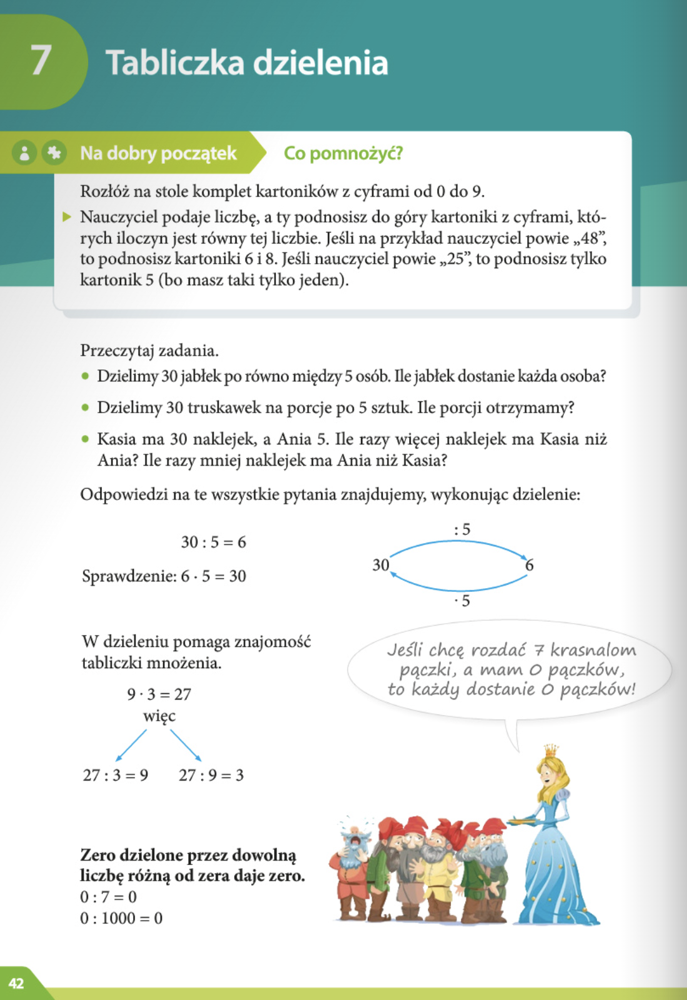
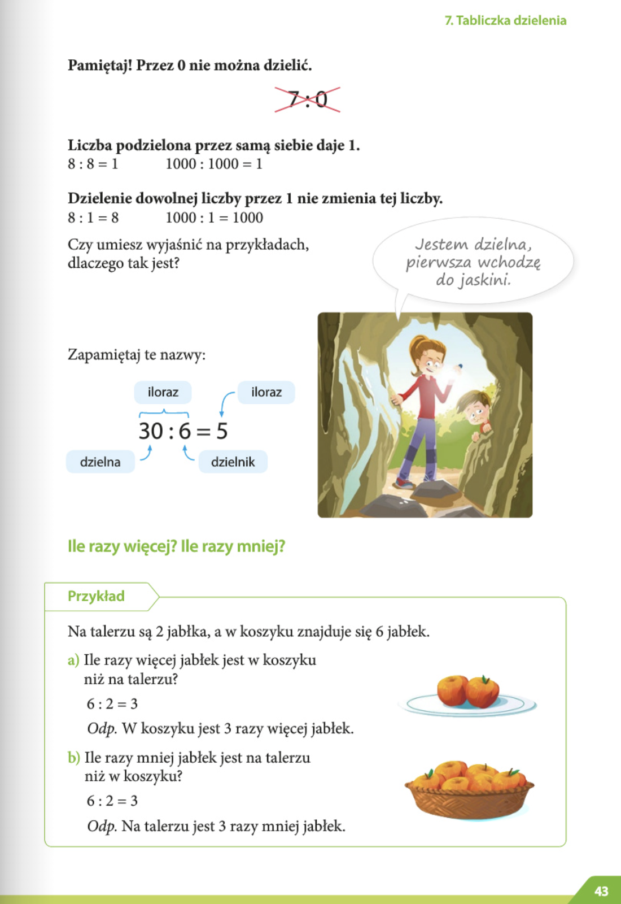

Furgonetka waży 3 tony, a duża ciężarówka - 21 ton. Ile razy ciężarówka jest cięższa od furgonetki?
Matematyka
Liczby naturalne - czesc 1
Lekcja 07
Tabliczka dzielenia (Таблица деления) str 42-45


Zbiór zadań
Rozgrzewka
Zadanie 4
Rozwiązanie
Obliczenia
21 ÷ 3 = 7
Odpowiedź
Ciężarówka jest 7 razy cięższa od furgonetki.
Zadanie 6
W klasie 4b jest 32 uczniów. Wszyscy uczniowie tej klasy usiedli przy 4-osobowych stolikach, zajmując wszystkie miejsca przy każdym z nich. Przy ilu stolikach siedzieli uczniowie 4b?
Rozwiązanie
Obliczenia
32 ÷ 4 = 8
Odpowiedź
Uczniowie 4b siedzieli przy 8 stolikach.
Zadanie 8
Mama przygotowała 42 słoiki z konfiturami. Ustawiła je w rzędach na półce, po 6 słoików w każdym rzędzie. W ilu rzędach stały te słoiki na półce?
Rozwiązanie
Obliczenia
42 ÷ 6 = 7
Odpowiedź
Słoiki stały w 7 rzędach na półce.
Trening
Zadanie 13
Każde z pięciorga dzieci wydało na zakup ciastek 12 zł, ale kupiły ciastka w różnych cenach. Ania kupiła ciastka po 4 zł za paczkę, Borys – po 6 zł, Celina – po 2 zł, Darek – po 3 zł, a Ewa – po 1 zł za paczkę.
a) Ile paczek ciastek kupiło każde z dzieci?
b) Ile razy więcej paczek ciastek kupiła Ewa niż każde z pozostałych dzieci?
Rozwiązanie
Obliczenia
a) Liczba paczek ciastek:
- Ania: 12 ÷ 4 = 3 paczki
- Borys: 12 ÷ 6 = 2 paczki
- Celina: 12 ÷ 2 = 6 paczek
- Darek: 12 ÷ 3 = 4 paczki
- Ewa: 12 ÷ 1 = 12 paczek
b) Ile razy więcej paczek kupiła Ewa:
- Ewa / Ania: 12 ÷ 3 = 4 razy
- Ewa / Borys: 12 ÷ 2 = 6 razy
- Ewa / Celina: 12 ÷ 6 = 2 razy
- Ewa / Darek: 12 ÷ 4 = 3 razy
Odpowiedź
a) Ania – 3 paczki, Borys – 2 paczki, Celina – 6 paczek, Darek – 4 paczki, Ewa – 12 paczek.
b) Ewa kupiła 2 do 6 razy więcej paczek niż każde z pozostałych dzieci.
Na medal
Zadanie 20
Ewa i Kasia robiły na zimę powidła śliwkowe. Z 12 kg owoców otrzymały 30 słoików powideł. Okazało się, że zostało jeszcze 20 pustych słoików. Ile śliwek należy jeszcze dokupić, aby zapełnić powidłami puste słoiki?
Rozwiązanie
Obliczenia
1. Z 12 kg owoców powstało 30 słoików → w 1 słoiku powideł:
12 ÷ 30 = 0,4 kg owoców
2. Pustych słoików: 20
Ile owoców potrzeba: 20 × 0,4 = 8 kg
Odpowiedź
Należy dokupić 8 kg śliwek, aby zapełnić puste słoiki.
Zadanie 21
Opłata za wypożyczenie kajaka od godziny 10:00 do godziny 16:00 wynosi 4 zł za godzinę. Za wypożyczenie go w innych godzinach należy zapłacić 3 zł za godzinę. Jednorazowa opłata za wypożyczenie kajaka na całą dobę wynosi 30 zł. Pan Andrzej chce wypożyczyć kajak od godziny 9:00 do godziny 17:00. Który sposób obliczenia opłaty będzie dla niego korzystniejszy: za 8 godzin według cennika czy jednorazowo za całą dobę?
Rozwiązanie
Obliczenia
Czas wypożyczenia: 9:00 – 17:00 → 8 godzin
Opłata według cennika godzinowego:
- godz. 9:00–10:00 → 1 godzina po 3 zł = 3 zł
- godz. 10:00–16:00 → 6 godzin po 4 zł = 24 zł
- godz. 16:00–17:00 → 1 godzina po 3 zł = 3 zł
Razem: 3 + 24 + 3 = 30 zł
Opłata za całą dobę: 30 zł
Odpowiedź
Opłata wychodzi taka sama, więc oba sposoby są równie korzystne.
Zadanie 22
Jak zmieni się iloczyn dwóch liczb, gdy jedną zwiększymy trzykrotnie, a drugą zmniejszymy sześciokrotnie?
Rozwiązanie
Obliczenia
1. Mamy dwie liczby. Nazwijmy je po prostu „pierwsza” i „druga”.
2. Zmieniamy je: pierwszą trzykrotnie zwiększamy, a drugą sześciokrotnie zmniejszamy.
3. Liczymy nowy iloczyn:
- Nowa pierwsza liczba = 3 × stara pierwsza liczba
- Nowa druga liczba = 1/6 starej drugiej liczby
- Iloczyn = 3 × (stara pierwsza) × 1/6 × (stara druga) = 1/2 × (stary iloczyn)
Odpowiedź
loczyn będzie dwukrotnie mniejszy niż wcześniej.